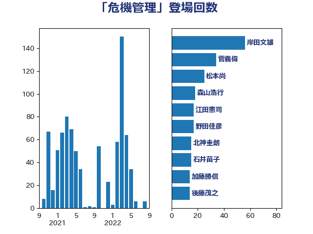

単語「危機管理」

| 岸田文雄 | 自由民主党 | 56 回 |
| 菅義偉 | 自由民主党 | 34 回 |
| 松本尚 | 自由民主党 | 25 回 |
| 森山浩行 | 立憲民主党 | 18 回 |
| 江田憲司 | 立憲民主党 | 17 回 |
| 野田佳彦 | 立憲民主党 | 17 回 |
| 北神圭朗 | 無所属 | 15 回 |
| 石井苗子 | 日本維新の会 | 15 回 |
| 加藤勝信 | 自由民主党 | 14 回 |
| 後藤茂之 | 自由民主党 | 14 回 |
| 枝野幸男 | 立憲民主党 | 14 回 |
| 東徹 | 日本維新の会 | 13 回 |
| 森まさこ | 自由民主党 | 13 回 |
| 菅直人 | 立憲民主党 | 13 回 |
| 高木かおり | 日本維新の会 | 12 回 |
| 磯崎仁彦 | 自由民主党 | 11 回 |
| 北側一雄 | 公明党 | 8 回 |
| 国定勇人 | 自由民主党 | 7 回 |
| 山際大志郎 | 自由民主党 | 7 回 |
| 岸信夫 | 自由民主党 | 7 回 |
| 本田顕子 | 自由民主党 | 7 回 |
| 柴田巧 | 日本維新の会 | 7 回 |
| 麻生太郎 | 自由民主党 | 7 回 |
| あかま二郎 | 自由民主党 | 6 回 |
| 吉田統彦 | 立憲民主党 | 6 回 |
| 山崎誠 | 立憲民主党 | 6 回 |
| 松野博一 | 自由民主党 | 6 回 |
| 西村康稔 | 自由民主党 | 6 回 |
| 森本真治 | 立憲民主党 | 4 回 |
| 武見敬三 | 自由民主党 | 4 回 |
| 浅川義治 | 日本維新の会 | 4 回 |
| 玄葉光一郎 | 立憲民主党 | 4 回 |
| 田村憲久 | 自由民主党 | 4 回 |
| 上田清司 | 国民民主党 | 3 回 |
| 中川正春 | 立憲民主党 | 3 回 |
| 中根一幸 | 自由民主党 | 3 回 |
| 中谷真一 | 自由民主党 | 3 回 |
| 丸川珠代 | 自由民主党 | 3 回 |
| 古賀之士 | 立憲民主党 | 3 回 |
| 塩崎彰久 | 自由民主党 | 3 回 |
| 大野泰正 | 自由民主党 | 3 回 |
| 小沼巧 | 立憲民主党 | 3 回 |
| 岡本あき子 | 立憲民主党 | 3 回 |
| 橋本岳 | 自由民主党 | 3 回 |
| 櫻井充 | 自由民主党 | 3 回 |
| 武田良太 | 自由民主党 | 3 回 |
| 浜田聡 | NHK党 | 3 回 |
| 白石洋一 | 立憲民主党 | 3 回 |
| 石田昌宏 | 自由民主党 | 3 回 |
| 若松謙維 | 公明党 | 3 回 |
| 萩生田光一 | 自由民主党 | 3 回 |
| 藤川政人 | 自由民主党 | 3 回 |
| 赤池誠章 | 自由民主党 | 3 回 |
| 赤羽一嘉 | 公明党 | 3 回 |
| 足立康史 | 日本維新の会 | 3 回 |
| 金田勝年 | 自由民主党 | 3 回 |
| 長妻昭 | 立憲民主党 | 3 回 |
| 高階恵美子 | 自由民主党 | 3 回 |
| 鰐淵洋子 | 公明党 | 3 回 |
| こやり隆史 | 自由民主党 | 2 回 |
| 上川陽子 | 自由民主党 | 2 回 |
| 中島克仁 | 立憲民主党 | 2 回 |
| 中谷一馬 | 立憲民主党 | 2 回 |
| 二階俊博 | 自由民主党 | 2 回 |
| 佐々木紀 | 自由民主党 | 2 回 |
| 佐藤茂樹 | 公明党 | 2 回 |
| 加田裕之 | 自由民主党 | 2 回 |
| 原口一博 | 立憲民主党 | 2 回 |
| 太栄志 | 立憲民主党 | 2 回 |
| 宗清皇一 | 自由民主党 | 2 回 |
| 室井邦彦 | 日本維新の会 | 2 回 |
| 小川淳也 | 立憲民主党 | 2 回 |
| 小野泰輔 | 日本維新の会 | 2 回 |
| 山口那津男 | 公明党 | 2 回 |
| 山本博司 | 公明党 | 2 回 |
| 岡田直樹 | 自由民主党 | 2 回 |
| 川合孝典 | 国民民主党 | 2 回 |
| 平口洋 | 自由民主党 | 2 回 |
| 後藤祐一 | 立憲民主党 | 2 回 |
| 徳永エリ | 立憲民主党 | 2 回 |
| 斎藤嘉隆 | 立憲民主党 | 2 回 |
| 有村治子 | 自由民主党 | 2 回 |
| 木原誠二 | 自由民主党 | 2 回 |
| 松沢成文 | 日本維新の会 | 2 回 |
| 根本匠 | 自由民主党 | 2 回 |
| 梅村みずほ | 日本維新の会 | 2 回 |
| 梅村聡 | 日本維新の会 | 2 回 |
| 橋本聖子 | 無所属 | 2 回 |
| 津島淳 | 自由民主党 | 2 回 |
| 渡辺周 | 立憲民主党 | 2 回 |
| 玉木雄一郎 | 国民民主党 | 2 回 |
| 石川博崇 | 公明党 | 2 回 |
| 緒方林太郎 | 無所属 | 2 回 |
| 美延映夫 | 日本維新の会 | 2 回 |
| 自見はなこ | 自由民主党 | 2 回 |
| 芳賀道也 | 国民民主党 | 2 回 |
| 茂木敏充 | 自由民主党 | 2 回 |
| 西岡秀子 | 国民民主党 | 2 回 |
| 西田実仁 | 公明党 | 2 回 |
| 鈴木俊一 | 自由民主党 | 2 回 |
| 鈴木義弘 | 国民民主党 | 2 回 |
| 阿部知子 | 立憲民主党 | 2 回 |
| 黄川田仁志 | 自由民主党 | 2 回 |
| たがや亮 | れいわ新選組 | 1 回 |
| 三宅伸吾 | 自由民主党 | 1 回 |
| 三谷英弘 | 自由民主党 | 1 回 |
| 上杉謙太郎 | 自由民主党 | 1 回 |
| 上野賢一郎 | 自由民主党 | 1 回 |
| 世耕弘成 | 自由民主党 | 1 回 |
| 井上哲士 | 日本共産党 | 1 回 |
| 伊藤孝恵 | 国民民主党 | 1 回 |
| 佐藤英道 | 公明党 | 1 回 |
| 倉林明子 | 日本共産党 | 1 回 |
| 北村経夫 | 自由民主党 | 1 回 |
| 古川元久 | 国民民主党 | 1 回 |
| 吉川ゆうみ | 自由民主党 | 1 回 |
| 吉田忠智 | 立憲民主党 | 1 回 |
| 堀井巌 | 自由民主党 | 1 回 |
| 堀内詔子 | 自由民主党 | 1 回 |
| 大塚耕平 | 国民民主党 | 1 回 |
| 大家敏志 | 自由民主党 | 1 回 |
| 大島敦 | 立憲民主党 | 1 回 |
| 大西健介 | 立憲民主党 | 1 回 |
| 宮本岳志 | 日本共産党 | 1 回 |
| 宮本徹 | 日本共産党 | 1 回 |
| 小泉進次郎 | 自由民主党 | 1 回 |
| 山井和則 | 立憲民主党 | 1 回 |
| 山本太郎 | れいわ新選組 | 1 回 |
| 山田宏 | 自由民主党 | 1 回 |
| 山谷えり子 | 自由民主党 | 1 回 |
| 岡本三成 | 公明党 | 1 回 |
| 岩渕友 | 日本共産党 | 1 回 |
| 川田龍平 | 立憲民主党 | 1 回 |
| 掘井健智 | 日本維新の会 | 1 回 |
| 斉藤鉄夫 | 公明党 | 1 回 |
| 新妻秀規 | 公明党 | 1 回 |
| 朝日健太郎 | 自由民主党 | 1 回 |
| 末松義規 | 立憲民主党 | 1 回 |
| 本庄知史 | 立憲民主党 | 1 回 |
| 杉本和巳 | 日本維新の会 | 1 回 |
| 林芳正 | 自由民主党 | 1 回 |
| 柳本顕 | 自由民主党 | 1 回 |
| 横沢高徳 | 立憲民主党 | 1 回 |
| 永岡桂子 | 自由民主党 | 1 回 |
| 河西宏一 | 公明党 | 1 回 |
| 河野太郎 | 自由民主党 | 1 回 |
| 浅田均 | 日本維新の会 | 1 回 |
| 浅野哲 | 国民民主党 | 1 回 |
| 浜口誠 | 国民民主党 | 1 回 |
| 浜地雅一 | 公明党 | 1 回 |
| 熊野正士 | 公明党 | 1 回 |
| 牧原秀樹 | 自由民主党 | 1 回 |
| 牧山ひろえ | 立憲民主党 | 1 回 |
| 甘利明 | 自由民主党 | 1 回 |
| 田中健 | 国民民主党 | 1 回 |
| 田島麻衣子 | 立憲民主党 | 1 回 |
| 田村まみ | 国民民主党 | 1 回 |
| 田村智子 | 日本共産党 | 1 回 |
| 石井準一 | 自由民主党 | 1 回 |
| 石原宏高 | 自由民主党 | 1 回 |
| 石垣のりこ | 立憲民主党 | 1 回 |
| 石川大我 | 立憲民主党 | 1 回 |
| 礒崎哲史 | 国民民主党 | 1 回 |
| 福山哲郎 | 立憲民主党 | 1 回 |
| 竹内真二 | 公明党 | 1 回 |
| 緑川貴士 | 立憲民主党 | 1 回 |
| 義家弘介 | 自由民主党 | 1 回 |
| 羽田次郎 | 立憲民主党 | 1 回 |
| 舞立昇治 | 自由民主党 | 1 回 |
| 蓮舫 | 立憲民主党 | 1 回 |
| 西銘恒三郎 | 自由民主党 | 1 回 |
| 越智隆雄 | 自由民主党 | 1 回 |
| 足立敏之 | 自由民主党 | 1 回 |
| 里見隆治 | 公明党 | 1 回 |
| 重徳和彦 | 立憲民主党 | 1 回 |
| 野田国義 | 立憲民主党 | 1 回 |
| 金子恭之 | 自由民主党 | 1 回 |
| 鈴木英敬 | 自由民主党 | 1 回 |
| 鈴木貴子 | 自由民主党 | 1 回 |
| 長峯誠 | 自由民主党 | 1 回 |
| 長浜博行 | 無所属 | 1 回 |
| 長谷川淳二 | 自由民主党 | 1 回 |
| 青山周平 | 自由民主党 | 1 回 |
| 青山繁晴 | 自由民主党 | 1 回 |
| 青柳陽一郎 | 立憲民主党 | 1 回 |
| 高市早苗 | 自由民主党 | 1 回 |
| 高木啓 | 自由民主党 | 1 回 |
| 高野光二郎 | 自由民主党 | 1 回 |
| 高鳥修一 | 自由民主党 | 1 回 |